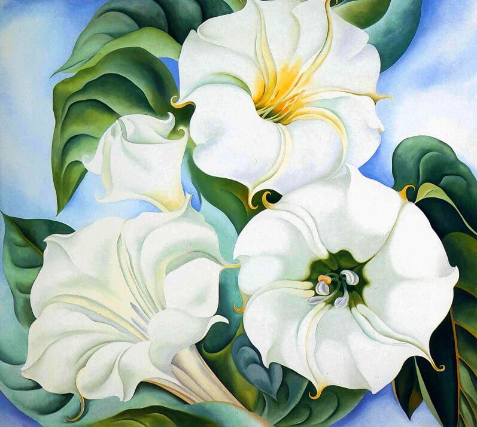
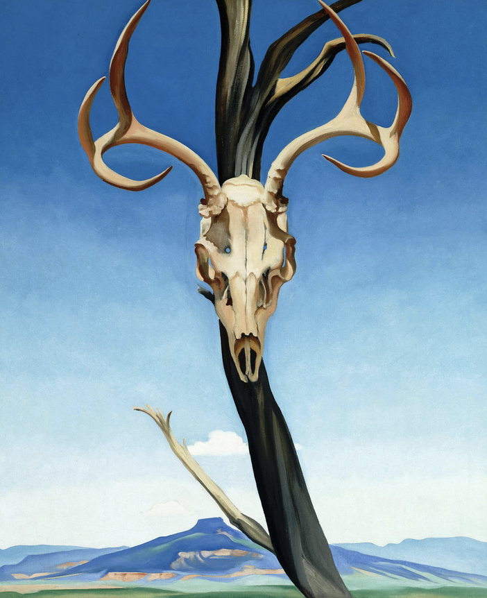

<!DOCTYPE html>
<html lang="en"></html>
<head>
    <meta charset="UTF-8">
    <meta name="viewport" content="width=device-width, initial-scale=1.0">
    <title>Georgia O'Keeffe Mural</title>
    <link rel="stylesheet" href="style.css">
</head>
<body>
 <header>
        
        <nav>
            <ul>
                <!-- header links.-->
                <li><a href="home.html">Home</a></li> 
                <li><a href="home.html#artwork">Mural At A Glance</a></li>
                <li><a href="about.html">About</a></li>
            </ul>
        </nav>

        <div class="flex-container1">
            <h1>Georgia <br>O'Keeffe</h1>
        </div>

        <div class="flex-container">
            
            
            <div class="text-container">
                <h2> Who was she?</h2>
                <p>She was born on November 15th, 1887 in Sun Prairie, Wisconsin. She died at the age of 98 on March 6th, 1986.</p>
                <p>Georgia O’Keeffe is known for her paintings of flowers, bones, and the built landscape unique to New York City and New Mexico. Her artwork followed Asian art styles as she kept her artwork clean and simple. Her paintings of flowers showed how the zoomed-in photographs of flowers were popular at the time. She would paint ovals and spirals.</p>
            </div>
            

        </div>

    </header>

    <section id="paintings">
        <div class="text-container">
            <h2>What did she paint?</h2>
        </div>
        <div class="painting-grid">
            
            <p style="grid-area: desc-1"> <a href="https://www.georgiaokeeffe.net/red-canna.jsp#google_vignette"> Red Canna, 1924 by Georgia O'Keeffe </a> </p>

            
            <p style="grid-area: desc-2"> <a href="https://www.georgiaokeeffe.net/sky-above-clouds-iv.jsp"> Sky Above Clouds IV, 1965 by Georgia O'Keeffe </a> </p>

            
            <p style="grid-area: desc-3"> <a href="https://www.georgiaokeeffe.net/jimson-weed.jsp#google_vignette"> Jimson Weed, 1936 by Georgia O'Keeffe </a> </p>

            
            <p style="grid-area: desc-4"> <a href="https://www.arthistoryproject.com/artists/georgia-okeeffe/deers-skull-with-pedernal/"> Deer's Skull with Pedernal, 1936 by Georgia O'Keeffe </a> </p>

        </div>
        <div class="text-container">
            <h3>How many of her paintings can you find across the school?</h3>
        </div>
    </section>
    <section>
        <div class="flex-container" id="museum">
            <div class="text-container">
                <h2>Where are her art pieces?</h2>
                <h2> <ol> <li><a href="https://www.okeeffemuseum.org"> Georgia O'Keeffe Museum of Art </a></li>
                <li><a href="https://www.artic.edu/collection?artist_ids=Georgia+O%27Keeffe">Art Institute Chicago </a>
                </li></ol></h2>
            </div>
        </div>
    </section>

    <section id="artwork">
            <div class="text-container">
                <h2> The Painting Process
            </h2>
            </div>
            <div class="grid-container">
            
            
                
                
                
                          
                          
            </div>
        <a href="home.html#artists" class="cta-button"> Check out the other artists in detail!</a>
    </section>

    <footer>
        <p> Copyright 2025</p>
    </footer>

</body>